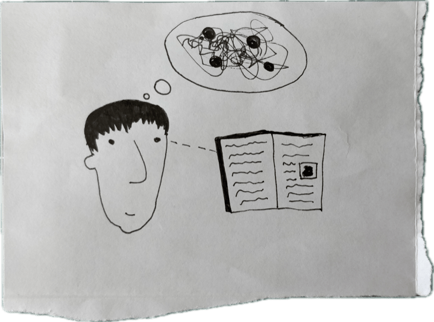
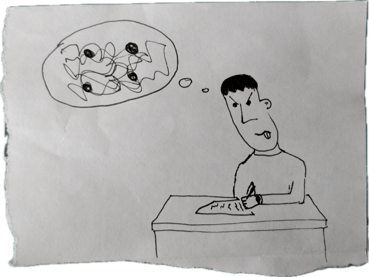
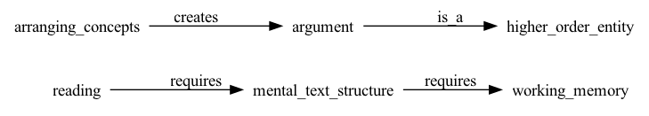
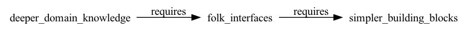

Опубликовано: 28.08.2026
Introduction
Text is probably one of the greatest human inventions. It helps convey ideas, advance science and culture and inspire invention. However, its major drawback is that it is a poor interface to ideas. The reason for it is that text is a linear sequence of symbols that can be said to encode a messy multidimensional space of concepts and relations on several layers of abstraction. So, there is just not enough bandwidth. And we have become accustomed to how diabolically hard reading and writing might be. But they do not need to be that hard.
I do not mean that text as a medium should go. Instead, making
text’s structure visible and manipulable — in both
reading and writing — might augment and support sense-making by
turning any text’s ontological structure into an
“object-to-think-with”. In this essay, I lay out this vision,
suggest a possible implementation with ubiquitous tools, situate
it within current “computational” authoring and reading software
and address possible objections. The idea is simple: mark
sentences with
[subject, typed relation, object, domain], render
those beside the text, and let them dynamically assemble into a
structural map of the text which you can change on the fly.
Let me be clear about what this essay is and is not. I am not claiming that a propositional map proves to improve comprehension — that is an empirical question, not an article of faith. The building blocks here are not new: propositions, maps and external representations all have long pedigrees. What I am proposing is a particular recombination of them — a portable, editable, co-produced convention that treats reading and writing symmetrically, on the simplest possible stack. I will argue that this combination is worth building, and I will sketch one way it might be tested. Whether it holds up is another matter.
Text as a low-bandwidth interface to ideas
A text is an interface to structured ideas. While reading, we mentally reconstruct the model, or ontology of concepts and relations in that text. Reading comprehension studies point that the more capacious a person’s working memory is, the more easily they can understand what they’ve read and integrate the meaning of sentences, paragraphs and entire text (Narayanan & Jurafsky, 2022).
The same is even more true for writing. Writing is generative: planning, translating and reviewing compete for the same limited working memory (kellogg2001?), so the writer holds entire idea-contexts in mind while producing and monitoring text, not just reconstructing them (mccutchen1996?). The 7±2 (miller1965?) — or 4±1 (cowan2001?) — slot limit is hit not by “storing” and arranging items but by simultaneously maintaining, transforming and outputting them (olive2011?).
Memory capacity needed for reading and writing is a cognitive constraint which text as a medium imposes on us. Yet, this can be explained by text’s own deeper ontological constraint.
Following the encoding metaphor (Waters, 2021), a text can be seen as a one-dimensional string of symbols that encodes multidimensional space of relations between concepts, ideas and thoughts. Reading “unpacks” ideas and creates such a space in your head. Writing “packs” that mess of ideas and compresses it into a one-dimensional string of symbols. This makes reading and writing cognitively symmetric as they operate on the same substrate — ideas.


The encoding/decoding metaphor partially explains text’s low bandwidth for conveying ideas. It contains much more information than a string of text1. And it demands either inhumane amounts of attention and memory or a less “lossy” conversion between structured ideas and text.
A proposition — that something is related to something — is the simplest unit of structured meaning. Embeddings capture statistical proximity; propositions capture explicit relations that can be inspected and edited by a human. That is the representation we need.
What an idea space can consist of and how to make it tractable to augment sense-making in reading and writing? And what if, instead of carrying it in my head, I could look at it and change it?
The structure of ideas
A text encodes ideas, and ideas have propositional structure. Every declarative sentence asserts that something is related to something else in some way. Although “idea space” can be many things, a way to make it tractable is to focus on a simple structure expressible as a triple2:
[subject, relation, object].Why triples and not, say, concept maps (Novak), mind maps, or free-form knowledge graphs? Because a triple is the minimal unit of propositional meaning — you cannot compress further without losing the relation. Concept maps add visual hierarchy but keep the same atomic structure underneath. The choice of triples over richer graphs is deliberate: simplicity enables hand-annotation and LLM extraction at scale, and makes the structure portable across texts and domains.
We, as readers or writers, not only rebuild that structure for each sentence in our heads but compare and arrange concepts to arrive at higher-order entities like arguments and logical lacunae. And it is precisely this reconstruction that costs working memory. For example, in this paragraph I have assumed that:
[reading, requires, mental_text_structure]
[arranging_concepts, creates, argument]
[argument, is_a, higher_order_entity]
[mental_text_structure, requires, working_memory].It can be represented as a map:

What makes triples do useful work is constrained yet extensible dictionary of typed relations, so that we distinguish “causes” from “depends_on” from “contradicts”. Typed relations like logic, cause-effect, temporality, and mereology (part-whole) are useful here for two reasons. First, they enforce clearer thinking and, second, they are domain-general, so they can be found in many texts across many domains.
The idea of a domain is crucial here. It labels a
region of discourse where the triple makes sense.
Epistemology, economics, cognitive science and pragmatics are
possible examples. This allows triples from different fields to be
told apart and recombined. Without domains,
reading — requires — working_memory and
climate_change — requires — CO2 look structurally
identical; domains flag that they belong to different
conversations and cannot be transitively linked. Our previous
triples become quadruples:
[reading, requires, mental_text_structure, cognitive_science]
[arranging_concepts, creates, argument, semantics]
[argument, is_a, higher_order_entity, semantics]
[mental_text_structure, requires, working_memory, cognitive_science].Propositions enforce ontological reading of a text — what is happening there at a glance — and domains enforce contextualized understanding of these propositions3.
Having an idea space disguised as domain-contextualized propositions with typed relations allows for several pragmatically valuable things. First, you can search for concepts and relations:

Second, you can compute over ontology — find transitive closures and lacunae which could bring cross-domain insights and new ideas. For example, I might never manually find that

which means that
deeper_domain_knowledge —— requires —» simple_building_blocks.
And it by itself inspires new ideas and angles. Moreover, another
closure on our present graph is that
[reading, requires, working_memory]. Although this
seems obvious, it makes claims explorable: “why does reading
require working memory? Because reading requires a mental
representation of text’s structure”. Claims become more
inspectable.
Writing: baking idea structure into dynamic media
[? how typed propositions help in writing]
We are used to writing prose first and structuring it into a narrative later. I suggest reversing the order: start with structure and bake it into the medium itself.
For example, I write prose and mark its parts with
[? main idea of the part] which you could see in the
paragraph above. This serves two functions. First, it forces me to
formulate what I want to say. Second, it helps to view the
argument from a birds-eye view and check the logic.
One level deeper are the propositions which I add as commented
out quadruples [subject, relation, object, domain].
They dynamically assemble into a structural map of the text that I
am working on. Of course, manually extracting propositions from
prose is a lot of inhumane work, so I use local LLM as an aid.
You can add yet another level of structure by introducing types of propositions: thesis, claim, example, counterargument, etc. Add them as comments to parse later and inspect whether your thesis is supported by claims.
Why is all this valuable for writing? Because the hardest part of writing is holding the argument in your head — the working-memory bottleneck above. A structural map partially outsources that load by allowing for re-representing concepts and relations which have already gone through your working memory4. Instead of keeping the argument in mind, you keep it in view and inspect it.
The key advantage over outlining-as-writing is that the map is live and co-produced with the text. It is not a plan you abandon. It is the text’s propositional skeleton rendered alongside the prose, that bidirectionally syncs ontological structure and its expression in words.
Reading: malleable maps with LLM-powered parsers
The same construction works with reading, as well. This is the mirror of writing — same cognitive load, same encoding problem, different direction. When you write, you compress ideas into text. When you read, you unpack text back into ideas. The bottleneck is the same: working memory reconstructing ontological structure on the fly.
As you read a digital text — a chapter, an article, a book — an LLM-powered parser runs over it and extracts the entity-relation structure, producing the same triples an author might have written. The output is a first draft of the text’s map. You, the reader, then edit the parsed relationships: you confirm what you consider true, flag what you doubt, merge an entity that the parser split, re-type a relation you think is better described as “assumes” than “proves”. You assemble your own map of the text while reading it — but you start from a scaffold instead of a blank page.
What does this look like in practice? Say you are reading a paper on cognitive load theory. The parser extracts:
[working_memory, limits, comprehension, cognitive_science]
[intrinsic_load, competes_with, germane_load, cognitive_science]
[germane_load, enables, schema_building, cognitive_science].You read on and find that the paper assumes working memory capacity is fixed across tasks — but your own experience suggests it varies. You change the relation:
[working_memory, has_attribute, capacity, cognitive_science]
[capacity, has_attribute, fixed_volume, cognitive_science] ← flagged: assumptionThe map now shows a gap: a claim rests on an unstated assumption. This is what a propositional map makes visible that passive reading does not.

This is the reading side of the cognitive symmetry. When you read, you unpack the author’s propositions and link them to your prior knowledge. A map makes that unpacking visible and editable. What is more, because triples are portable, you can drag an idea from one text’s map into another’s — your map, growing across everything you read. It is like “mind maps” but general enough to see through entire text corpora.
Why should this enrich, magnify, and augment sense-making rather than flatten it? Because a map of propositions makes the gaps visible. A text that looked air-tight reveals that one claim rests on an unstated assumption, that a relation is asserted but never argued. Noticing those gaps is precisely what generates new ideas — new questions, new links, new relations to investigate. The map does not replace thinking, but gives thinking (yet another) working surface. External representations do not merely save memory — they enable kinds of thinking that are impossible without them (Kirsh, 2010).
If all this is to be more than a pleasant intuition, it has to be testable. Here is one way, in the spirit of humane, measurable design: take two groups of comparable readers and the same moderately difficult essay. One group reads it as plain text; the other reads it with the editable map alongside. Give both the same comprehension test — not just “what was the thesis”, but questions that require assembling relations across paragraphs, and detecting an unstated assumption. Time them, count errors. If the map earns its keep, the second group should hold more of the argument in view and notice more gaps, without taking meaningfully longer. The hypothesis is that a map moves part of the load from working memory to the page. A version for writing is harder to design but not impossible: compare the structural soundness of arguments drafted to a visible skeleton versus a blank page, judged blind.
Why not just build explorable explanations?
You might object: there is already a rich culture of explorable explanations — texts supported with interactive dynamic media. And there is a mature technical stack for them: from widespread coding notebooks to more idiosyncratic tools like Pollen, Tangle, Idyll and others. If that world exists, why propose yet another format?
Explorable explanations are difficult to produce, because each one requires its own domain structure implemented as an interactive engine: a physics essay needs a physics engine, an economics essay needs a model of money, a statistics essay needs a random number generator.

The author must design an interactive substrate particular to one piece of content which is deemed incommensurable with other domains. And if one “explorable” does excellent job in providing a space for tinkering, it does not help at scale. As a result, explorable explanations are bespoke, costly and produced by a handful of gifted tinkerers rather than by general population of non-fiction writers.
Instead of building a special domain structure for every text,
let’s work with the ontological structure of text itself,
which every text already has. Every essay, every chapter, every
paper encodes propositions. The quadruples
[subject, typed relation, object, domain] are not an
exotic domain model but a substrate all texts already have. This
universality is the point: because the medium is text’s own
structure rather than a bespoke engine, the same simple tooling
works for any text you read or write.
That is the sense in which the approach is computable without being high-bar. It takes seriously the idea of the “computational text,” but finds its computation not in special-purpose models but in the ordinary logic of propositions.
The best part is that you do not need a new platform to try this. The writing side can be built with the simplest tools on hand — markdown, bash, awk, JavaScript and a couple of your own writing conventions.
For example, you keep your text as a markdown file. A
structural annotation is just a convention — a bracketed quadruple
after a sentence, or a line of machine-readable metadata. A few
lines of awk or node extract
propositions from the markdown and pipe them into a small
JavaScript file that renders the growing map beside the text — a
list of subject–relation–object cards, color-coded by domain,
grouped by section, filterable. Because the map is generated from
the source rather than maintained separately, it can never drift
out of sync with the text.
The beauty of typing the annotation by hand is that it is the act of formulating the thought. You cannot annotate a sentence you have not understood. The tool forces the very skill that reading and writing both depend on.
For reading, the same extraction script can be pointed at any other text, with an LLM-parsing in place. A simple plugin for a reading environment like Zotero could take the open PDF, run the parser, show the resulting map in a side panel, and let you edit relations and drag ideas into a private map that persists across texts. This is not hypothetical architecture — it is a thin layer of glue around tools that already exist.
Conclusion
Ideas have propositional structure, but texts hide it behind a linear facade. Working memory is the bottleneck that makes reconstructing that structure — in reading and in writing — costly. So I propose to make it visible: propositions from concepts and relations, dynamically assembled into an editable map. Two things make this work at scale. First, a convention general enough to transfer across domains and texts — the proposition quadruples with typed relations above. Second, machinery simple enough to be accessible to non-technical writers.
That, at any rate, is the promise: a map that augments sense-making, turning the invisible labor of comprehension into a visible, editable “object-to-think-with”, making gaps visible, letting ideas travel from one text to another — all with the simplest possible machinery: markdown, bash, JavaScript, an LLM parser. Whether it keeps that promise is a question for the experiment I sketched, not for faith.
You can cite this text like this:
Valerii Shevchenko, Ontology-augmented text as manipulable idea structure. Moscow, 2026. URL: https://vsblog.netlify.app/symmetry_eng/
If you use Zotero and need a different citation style, add this text via a bib entry:
@misc{shevchenko2026,
author = {Valerii Shevchenko},
title = {Ontology-augmented text as manipulable idea structure},
year = {2026},
howpublished = {\url{https://vsblog.netlify.app/symmetry_eng/}},
address = {Moscow}
}Sources
The concept of implicature in pragmatics and the notions of speaker meaning are cases in point. They show that what is said could mean many things and it is up to the listener to interpret and infer a meaning.↩︎
In machine learning, a structure like
[concept, relation@domain, concept]is used in domain-contextualized concept graphs (wang2026?) on which I draw heavily.↩︎Of course, there is a difficulty defining what constitutes and circumscribes a domain, especially formally, as (wang2025?) notes. Yet, as an aid for sense-making, this may not be a problem.↩︎
Re-representing is considered necessary for sense-making (Russell et al., 1993; Kirsh, 2010).↩︎